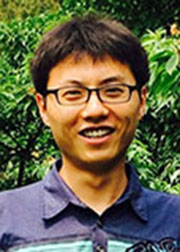

宝剑锋自磨砺出 梅花香自苦寒来
我是东北师范大学化学学院2008级的徐晓斌。我一直都梦想着成为一名科学家，用自己的知识回报社会。这股神奇的力量一直指引着我，延续着我的热情与执着，让我一直坚持自己的梦想，努力拼搏，永不言败。
个人事迹
在学习中，凭借平时的勤奋钻研、刻苦努力，我的学习成绩在145名同学中连续三年稳居第一，连续两学年获得国家奖学金，综合成绩学分绩点达到4.36，领先师范专业第一名的4.16。此外我还三次获得了校“优秀学生”称号，并以非常优异的成绩一次性通过了英语四六级考试和国家计算机二级考试。平时我严格要求自己，不断地挑战自己，两份相同而又不同的国家奖学金证书见证着我的努力。我勤奋努力、积极主动，注重思考和理解，分析和总结，注意培养自己独立思考和解决问题的能力。同时我还自学了其他学校的经典教材，尝试从不同的角度去理解和思考。这样坚持下来，我的专业知识越来越深厚，对于每一个知识点的理解也越来越深刻，物理化学更是取得了100分的好成绩。 “厚积薄发”，我坚信只有在平时的学习中积累下知识的精华，才能在日后运用自如，有所成就。
个人事迹
在学习中，凭借平时的勤奋钻研、刻苦努力，我的学习成绩在145名同学中连续三年稳居第一，连续两学年获得国家奖学金，综合成绩学分绩点达到4.36，领先师范专业第一名的4.16。此外我还三次获得了校“优秀学生”称号，并以非常优异的成绩一次性通过了英语四六级考试和国家计算机二级考试。平时我严格要求自己，不断地挑战自己，两份相同而又不同的国家奖学金证书见证着我的努力。我勤奋努力、积极主动，注重思考和理解，分析和总结，注意培养自己独立思考和解决问题的能力。同时我还自学了其他学校的经典教材，尝试从不同的角度去理解和思考。这样坚持下来，我的专业知识越来越深厚，对于每一个知识点的理解也越来越深刻，物理化学更是取得了100分的好成绩。 “厚积薄发”，我坚信只有在平时的学习中积累下知识的精华，才能在日后运用自如，有所成就。
考虑到化学学科的特点，我通过大量的课外科研训练，提高自己的实践动手能力和创新能力，为以后的继续深造做好准备。从大二上学期开始，我加入王晓红副教授的课题组，成为我们年级最早接触科研的同学之一。先后参加了第三批国家大学生创新性试验计划《多酸催化转化纤维素制备5-羟甲基糠醛》，校科研立项《多金属氧酸盐除醛纳米催化剂的设计及催化性质的研究》（项目负责人），并以第四作者发表论文《Degradation of phenol accumulated in a micellar molybdovanadophosphate nanoreactor by air at ambient temperature and at mospheric pressure》(《Dalton Transactions》,2010, 39, 5087–5090)（SCI，IF=3.64）。这一系列研究成果于2010年入围“第三届全国大学生节能减排社会实践与科技竞赛”全国赛，并获得了到了高等教育司颁发的荣誉证书。今年2月至今，我开始从事纳米异质结构材料的合成及性能研究，并取得了较大的进展，相关的研究成果正在以第一作者撰写文章，准备发表。这一系列科研经历，进一步拓展了视野，锻炼了实验技能和实际动手能力，训练了科学的思维方式和创新精神，培养了严谨的科学态度和团队协作精神，为我以后研究生阶段的学习打下了良好的基础。
同时，我也十分注重自己在个人素质上的全面发展，通过做学生工作来为老师和同学服务。我先后做过化学学院团委组织部部长、科研协会副会长、校科研实践中心部员、班长等，组织策划了一系列活动，受到老师和同学们的好评。从中我明白了团队合作的重要，怎样更好的表达自己，让一个团队更团结，怎样更好地组织协调，自己也得到了充分地锻炼。
除此之外，我还不断丰富自己的人生阅历，积极参加社会实践和公益活动，以及学校和学院举办的各项活动。 2010年我分别参加了第六届“中国吉林•东北亚投资贸易博览会”和第三届“东芝杯•中国师范大学理科师范生教学技能创新大赛”的志愿服务工作，为赛会的成功举办贡献出了自己的一份力量，也让我开阔了眼界。大三学年我作为厚普公益学校化学组的教师，为同学们义务讲课，奉献爱心。虽然每次从备课到讲课都需要大量的时间，但当看到同学们在我的讲解下豁然开朗的时候，我都觉得很欣慰、很值得。从这个过程中我体会到了奉献爱心的幸福感。我还参加过英语十佳、挑战数字、校园定向越野锦标赛等比赛，参与迎新晚会、元旦晚会的演出等，一系列的活动经历锻炼自己的能力，让自己争取做到德智体全面发展。
在思想上，我积极寻求进步，热情友善，真诚待人，谦虚谨慎，积极进取，始终保持一颗感恩的心，在同学遇到困难时，我总会尽自己所能去帮助他们。在期末复习阶段经常会有同学问我学习方面的问题，我都会耐心细致的为他们解答，和他们探讨。在大三时，我还有幸为2010级的学弟学妹们介绍自己的学习经验。2010年8月，我有幸参加了第九期学生党员暑期学校“学生党员骨干学习班”及实践活动，并顺利结业，使自己的思想和认识有了进一步提高。2011年6月，我顺利转正，成为了一名光荣的中国共产党党员。
2011年6月底，我同时收到清华大学化学系和北京大学化学与分子工程学院举办的“全国优秀大学生夏令营”录取函，由于两个学校的夏令营时间冲突，综合考虑自己的研究兴趣和导师的情况后，我最终选择了清华大学。7月7日我参加了夏令营，与来自全国各大高校的83名优秀同学一起交流学习，在7月9日的“推荐免试直接攻读博士学位”的面试中，我凭借过硬的个人素质和优异的表现，得到了各位面试老师的认可，如愿被清华大学化学系录取。
2011年9月，我非常荣幸的成为宝钢教育基金优秀学生特等奖的获得者，作为全校唯一一位特等奖，我感到非常幸运，但同时感到的是一份压力和责任，我会在以后的学习生活中严格要求自己，让自己做的更好。
三年的大学生活转瞬即逝，我努力把握这段宝贵的大学时光，我没有忘记自己的梦想，并且一直都在为之拼搏。一方面，我在抓紧学业的同时，锻炼培养自己的科研能力,为自己日后的成长成才打下基础；另一方面，社会工作和公益活动在我大学生活中画出一道道亮丽的风景线，它们锻炼了我沟通交往的能力、组织策划的能力，并赋予了我团结协作的精神、乐观进取的心态。我会继续朝着我人生理想的方向努力，不断的进取，用自己的实际行动回报社会，回报祖国！